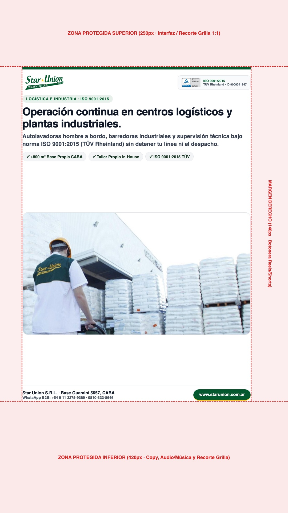
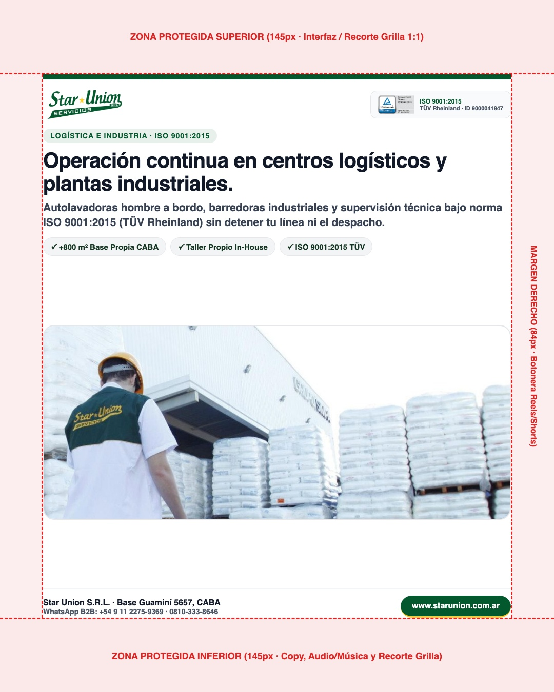
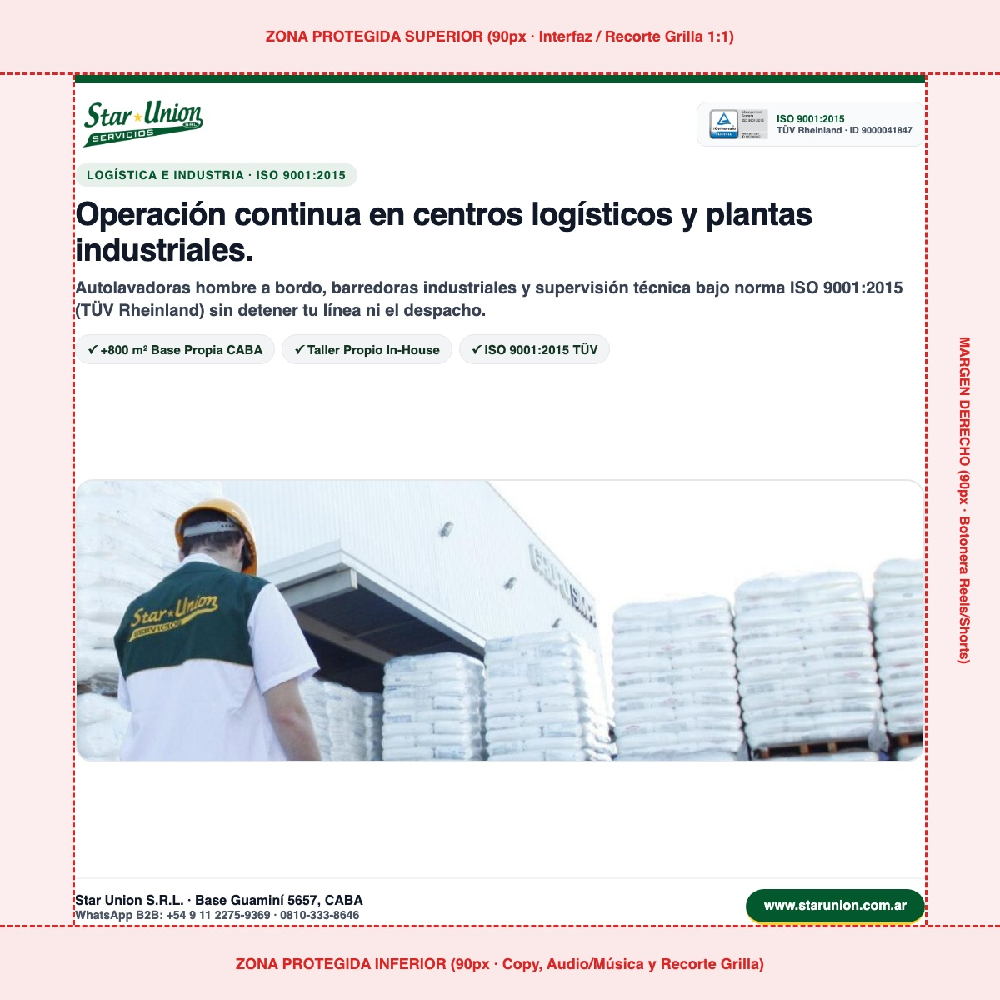

Planilla Cronológica y Pack Editable de Redes — Star Union S.R.L.
Todo queda guardado en tu disco y con archivos .SVG por capas + .CSV para abrir y editar textos/fotos en Canva, Adobe Express o Illustrator cuando quieras.
Subí estas 3 bases a Canva una sola vez, sumales la música de la marca y duplicalas siempre
Cada archivo .PPTX o .PDF contiene las 5 publicaciones adentro con sus fotografías reales de Star Union ya colocadas, textos 100% editables en Canva (fuente Open Sans) y márgenes de seguridad reales (grilla 1:1 de perfil y botonera derecha de Reels/Shorts despejadas).
Margen seguro: 250px arriba, 420px abajo (copy y música) y 140px a la derecha (botonera ❤️💬✈️ de Reels).

Margen seguro: 145px arriba y 145px abajo para que la grilla cuadrada 1:1 del perfil de IG jamás corte el logo ni el pie.

Margen seguro: 90px libres en los 4 lados para feed de escritorio y móvil de LinkedIn sin recortes laterales.

Calendario de Publicaciones Conectado al Embudo de Mailings Perfit
| Fecha Programada | Pieza / Hito | Canales | Por qué va este día (Lógica de Embudo y Temporada) | Acción |
|---|---|---|---|---|
| Jueves 29 Oct 2026 | #01 · Operación continua en centros logísticos y plantas industriales. | IG Feed + FB + LinkedIn + Estado WA + Short #1 | Acompaña en caliente los 179 clics a WhatsApp del Mailing de Octubre (#116/#119) donde el bloque #1 más clickeado (197 clics) fue Centros Logísticos y Plantas Industriales. | Ir a Pieza #01 ↓ |
| Lunes 02 Nov 2026 | #02 · Taller electromecánico propio: tus máquinas en planta nunca se detienen. | LinkedIn + IG Feed + FB + Story | Abre noviembre mostrando el diferenciador físico duro (Base Propia de 800 m² en Guaminí 5657 y Taller Electromecánico In-House) para decisores técnicos que están evaluando recambio de proveedor. | Ir a Pieza #02 ↓ |
| Miércoles 04 Nov 2026 | #03 · Presentismo auditado en tiempo real y cobertura de ausencias en menos de 2 horas. | IG Feed + FB + LinkedIn + Estado WA | Mitad de semana: ataca el dolor #1 de Administraciones y Gerencias (el ausentismo) con 'El Dato Técnico de Cleany' (Reloj Biométrico con alerta a los 15 min y cobertura < 2 hs). | Ir a Pieza #03 ↓ |
| Viernes 06 Nov 2026 | #04 · Higiene técnica para clínicas, sanatorios y laboratorios de alta exigencia. | LinkedIn + IG Feed + FB + Short #2 | Cierre de semana enfocado en el vertical regulado (Clínicas, Sanatorios y Laboratorios con insumos ANMAT + ISO 9001:2015 TÜV Rheinland), preparando el terreno antes del 1° Envío Perfit de Noviembre. | Ir a Pieza #04 ↓ |
| Martes 10 Nov 2026 | #05 · Mantenimiento integral de campus universitarios, colegios y clubes deportivos. | IG Feed + FB + LinkedIn + Estado WA | Pre-temporada de licitaciones educativas y deportivas (Universidades, Colegios y Clubes para receso de verano y colonia), conectando con el 1° Envío de Perfit de Noviembre (Jueves 19/11). | Ir a Pieza #05 ↓ |
| Jueves 19 Nov 2026 | 📧 PERFIT NOVIEMBRE (1° Envío Mensual · 10:00 hs) | Mailing Perfit (Lista Fidelizada + Lista Depurada) | Cierra el ciclo iniciado en redes: Bloque #1 Logística/Industria + Bloque #2 Inicio Licitaciones Verano (Clubes/Universidades) + Dato Técnico de Cleany aterrizando en las nuevas landings web. | Ver Plan Perfit → |
| Martes 24 Nov 2026 | 📧 PERFIT NOVIEMBRE (2° Envío +5 días a No-Abridores con Asunto Nuevo) | Mailing Perfit (Segmento Activos No-Abridores) | Aplica la regla comprobada de Septiembre (#117): cambio de asunto obligatorio para sumar +21,8% de aperturas extra y duplicar los clics hacia WhatsApp Comercial. | Ver Plan Perfit → |
3 Videos .MP4 Listos para Subir (YouTube Shorts, IG Reels, LinkedIn y Estados WA)
Cada escena incluye fotografía operativa real de Star Union S.R.L., logo oficial, sello TÜV Rheinland ISO 9001:2015, márgenes de seguridad para Reels/Shorts y pista musical corporativa ya mezclada adentro del .MP4.
Reel Multi-Escena (5 Fotos Reales: Playa Industrial, Hombre a Bordo, Taller Guaminí, Reloj Biométrico y Fachada)
⬇ Descargar Reel 5 Escenas (.MP4)Short #1: Infraestructura 800 m² Guaminí + Taller Propio + Presentismo Biométrico
⬇ Descargar Video Short #1 (.MP4)Short #2: Verticales de Alta Exigencia (Logística, Salud ANMAT y Educación) · ISO 9001
⬇ Descargar Video Short #2 (.MP4)


Operación continua en centros logísticos y plantas industriales.
Sentido cronológico: Acompaña en caliente los 179 clics a WhatsApp del Mailing de Octubre (#116/#119) donde el bloque #1 más clickeado (197 clics) fue Centros Logísticos y Plantas Industriales.


Continuidad operativa real para centros logísticos, depósitos y plantas industriales en CABA y GBA. En operaciones de alto tránsito de autoelevadores y despacho 24/7, la limpieza técnica no puede improvisarse ni frenar el ritmo de planta: ✔️ Maquinaria propia de alto rendimiento (autolavadoras y barredoras industriales). ✔️ Respaldo de nuestra Base Operativa Propia de 800 m² en calle Guaminí (CABA) con taller electromecánico in-house: si un equipo requiere asistencia, lo reemplazamos en el día. ✔️ Procesos auditados bajo Norma ISO 9001:2015 por TÜV Rheinland (ID Certipedia 9000041847). Solicitá un relevamiento técnico para tu planta o centro logístico en www.starunion.com.ar o por WhatsApp Comercial al +54 9 11 2275-9369. #StarUnion #LimpiezaIndustrial #LogisticaArgentina #FacilityManagement #ISO9001 #MantenimientoIndustrial
En logística e industria manufacturera, el proveedor de limpieza e higiene técnica impacta de forma directa en la seguridad operativa y en las auditorías de calidad. Por eso en Star Union S.R.L. estructuramos nuestro servicio industrial sobre tres pilares verificables: 1. Infraestructura propia: operamos desde nuestra Base Operativa Central de 800 m² (3 niveles) en Guaminí 5657, CABA, con stock permanente de insumos aprobados por ANMAT y flota propia de soporte (unidades Ford Transit). 2. Cero paradas por maquinaria: contamos con taller electromecánico propio in-house activo desde fines de 2010 para mantenimiento preventivo y reemplazo inmediato de equipos en planta. 3. Calidad certificada: procesos auditados bajo Norma ISO 9001:2015 por TÜV Rheinland (Certipedia ID 9000041847). 👉 Conocé nuestro protocolo para plantas y centros logísticos en: https://www.starunion.com.ar #FacilityManagement #Logistica #IndustriaArgentina #ISO9001 #HigieneIndustrial #OperacionesB2B #StarUnion
Cómo garantizamos la continuidad operativa en centros logísticos, depósitos y plantas industriales de CABA y GBA sin detener el despacho. 00:00 Limpieza mecanizada en pasillos de racks y zonas de despacho 00:04 Base Operativa Propia de 800 m² en calle Guaminí (CABA) y Taller Propio 00:08 Certificación ISO 9001:2015 por TÜV Rheinland (ID 9000041847) Solicitá una visita técnica para tu empresa en: https://www.starunion.com.ar WhatsApp Comercial B2B: +54 9 11 2275-9369
Taller electromecánico propio: tus máquinas en planta nunca se detienen.
Sentido cronológico: Abre noviembre mostrando el diferenciador físico duro (Base Propia de 800 m² en Guaminí 5657 y Taller Electromecánico In-House) para decisores técnicos que están evaluando recambio de proveedor.


¿Qué pasa cuando una máquina lavadora se detiene en medio de tu operación diaria? En Star Union no dependemos de talleres externos ni de alquileres improvisados. Contamos con Taller Electromecánico Propio dentro de nuestra Base Operativa Central de 800 m² en calle Guaminí (CABA). ✔️ Mantenimiento preventivo in-house de autolavadoras, barredoras, lustradoras y aspiradoras industriales. ✔️ Cabina de arenado, pintura y banco de pruebas propio. ✔️ Flota de unidades móviles Ford Transit para reemplazo inmediato en tu objetivo. Conocé nuestra infraestructura operativa en www.starunion.com.ar #StarUnion #InfraestructuraPropia #FacilityServices #LimpiezaProfesional #OperacionesB2B #CABA
Uno de los mayores costos ocultos al contratar servicios de limpieza B2B es la caída del servicio cuando se avería una máquina crítica en el objetivo. Fundada en 2001 (con sede histórica inicial en calle Pergamino), Star Union S.R.L. centraliza hoy toda su logística en su Base Operativa Propia de 800 m² (3 niveles) en Guaminí 5657, CABA, donde desde fines de 2010 opera nuestro Taller Electromecánico In-House. ¿Qué significa esto para cada gerente de planta, operaciones o compras? • Mantenimiento preventivo programado de todo el parque de maquinaria. • Stock propio de repuestos y equipos de back-up listos para salir con nuestra flota de unidades Ford Transit. • Trazabilidad completa bajo Norma ISO 9001:2015 (TÜV Rheinland). 👉 Recorré nuestra Base Operativa en: https://www.starunion.com.ar #InfraestructuraB2B #ComprasCorporativas #FacilityManagement #MantenimientoOperativo #ISO9001 #StarUnion
Por qué nuestra Base Operativa Propia de 800 m² en calle Guaminí (CABA) y nuestro Taller Electromecánico In-House garantizan cero interrupciones en tu empresa. 00:00 Parque de maquinaria propio y mantenimiento preventivo in-house 00:04 Stock permanente de insumos ANMAT y repuestos en 800 m² 00:08 Soporte logístico con flota propia Ford Transit en CABA y GBA Conocé nuestra infraestructura en: https://www.starunion.com.ar
Presentismo auditado en tiempo real y cobertura de ausencias en menos de 2 horas.
Sentido cronológico: Mitad de semana: ataca el dolor #1 de Administraciones y Gerencias (el ausentismo) con 'El Dato Técnico de Cleany' (Reloj Biométrico con alerta a los 15 min y cobertura < 2 hs).


El Dato Técnico de Cleany: ¿Cómo aseguramos el 100% de los puestos cubiertos en cada turno? En edificios corporativos, grandes consorcios, clínicas e industrias, una ausencia sin cubrir resiente toda la jornada. Por eso implementamos control biométrico conectado en tiempo real con nuestra mesa operativa: ✔️ Fichaje biométrico en el objetivo con alerta automática a los 15 minutos de tolerancia. ✔️ Activación inmediata de nuestra guardia operativa móvil. ✔️ Cobertura efectiva en menos de 2 horas con personal capacitado, uniformado y 100% registrado (ART y cargas sociales al día). Consultá por nuestros abonos corporativos en www.starunion.com.ar #StarUnion #ControlDePresentismo #GestionOperativa #ConsorciosCABA #EdificiosCorporativos #ISO9001
La previsibilidad en el servicio de limpieza corporativa no depende de promesas comerciales, sino de sistemas de control en tiempo real. En Star Union S.R.L. combinamos tecnología biométrica con capacidad de respuesta física: • Cada ingreso se valida mediante reloj biométrico conectado a nuestra central en CABA. • Ante cualquier demora superior a 15 minutos, el sistema dispara una alerta temprana a Supervisión. • Nuestra flota móvil traslada personal de guardia capacitado y registrado para cubrir la posición en menos de 2 horas, eliminando el riesgo de puestos vacantes y garantizando indemnidad laboral total. 👉 Conocé nuestro sistema de trazabilidad operativa en: https://www.starunion.com.ar/ #RecursosHumanos #Operaciones #FacilityManagement #Consorcios #EdificiosCorporativos #ComplianceLaboral #StarUnion
Cómo funciona el sistema de control de presentismo biométrico en tiempo real de Star Union S.R.L. para garantizar puestos 100% cubiertos en cada turno. 00:00 Fichaje biométrico en tiempo real en cada objetivo 00:04 Alerta automática a los 15 minutos en nuestra central operativa 00:08 Cobertura en menos de 2 horas con personal registrado y flota propia Solicitá una propuesta técnica en: https://www.starunion.com.ar/
Higiene técnica para clínicas, sanatorios y laboratorios de alta exigencia.
Sentido cronológico: Cierre de semana enfocado en el vertical regulado (Clínicas, Sanatorios y Laboratorios con insumos ANMAT + ISO 9001:2015 TÜV Rheinland), preparando el terreno antes del 1° Envío Perfit de Noviembre.


En clínicas, centros de diagnóstico y laboratorios, la limpieza e higiene institucional exige rigor técnico verificable y trazabilidad documental. ✔️ Protocolos estrictos de zonificación por áreas críticas, semicríticas y comunes para evitar contaminación cruzada. ✔️ Insumos desinfectantes de grado profesional aprobados por ANMAT, con fichas técnicas y hojas de seguridad (MSDS) disponibles en el objetivo. ✔️ Procesos auditados bajo Norma ISO 9001:2015 por TÜV Rheinland. Conocé nuestra división de Salud y Laboratorios en www.starunion.com.ar #StarUnion #Salud #ClinicasYHospitales #Laboratorios #HigieneHospitalaria #ISO9001 #ANMAT
La gestión de higiene en instituciones de salud, centros médicos y laboratorios farmacéuticos requiere estándares auditables en cada turno. Desde nuestra división especializada en Salud y Laboratorios, en Star Union S.R.L. implementamos: • Codificación estricta de elementos y paños por área para prevenir la contaminación cruzada. • Utilización exclusiva de productos aprobados por ANMAT con documentación técnica y hojas de seguridad (MSDS) en carpeta de planta. • Supervisión técnica periódica y auditoría de procesos certificada bajo Norma ISO 9001:2015 por TÜV Rheinland (Certipedia ID 9000041847). 👉 Consultá el protocolo técnico para instituciones médicas en: https://www.starunion.com.ar #SaludArgentina #GestionHospitalaria #Laboratorios #Bioseguridad #ISO9001 #StarUnion
Protocolos de desinfección e higiene institucional para clínicas, hospitales, centros de diagnóstico y laboratorios bajo Norma ISO 9001:2015. 00:00 Zonificación técnica y prevención de contaminación cruzada 00:04 Insumos aprobados por ANMAT con hojas de seguridad (MSDS) 00:08 Supervisión auditada bajo ISO 9001:2015 (TÜV Rheinland) Conocé más en: https://www.starunion.com.ar
Mantenimiento integral de campus universitarios, colegios y clubes deportivos.
Sentido cronológico: Pre-temporada de licitaciones educativas y deportivas (Universidades, Colegios y Clubes para receso de verano y colonia), conectando con el 1° Envío de Perfit de Noviembre (Jueves 19/11).


Miles de personas circulan cada día por campus universitarios, colegios bilingües y clubes deportivos. Mantener cada espacio impecable sin interferir con las actividades académicas o deportivas requiere planificación milimétrica. ✔️ Operación en contraturno nocturno y guardias activas durante los cambios de turno. ✔️ Tratamiento específico para pisos deportivos de madera/parquet, gimnasios, vestuarios, comedores y aulas. ✔️ Personal capacitado en nuestra aula propia de formación, uniformado e identificado. Conocé nuestras referencias en educación y deporte en www.starunion.com.ar #StarUnion #Universidades #Colegios #ClubesDeportivos #InfraestructuraEducativa #LimpiezaProfesional
¿Cómo se gestiona la higiene diaria de un campus universitario o un club deportivo donde circulan miles de personas por jornada? En Star Union S.R.L. acompañamos a instituciones educativas y deportivas líderes (como Universidad Torcuato Di Tella, Asociación Escuelas Lincoln y Club de Amigos) con un esquema de doble capa operativa: 1. Guardia diurna de mantenimiento continuo en sanitarios, áreas comunes, comedores y vestuarios durante los picos de circulación. 2. Operativo intensivo en contraturno con maquinaria silenciosa para el tratamiento de pisos deportivos, aulas magnas, laboratorios y gimnasios. 👉 Conocé nuestras soluciones para instituciones educativas y clubes en: https://www.starunion.com.ar #Educacion #Universidades #GestionDeportiva #FacilityManagement #ISO9001 #StarUnion
Gestión de higiene y mantenimiento en contraturno para grandes campus universitarios, colegios e instituciones deportivas en CABA y GBA. 00:00 Cuidado técnico de pisos deportivos de parquet y gimnasios 00:04 Operación sincronizada en aulas, laboratorios y vestuarios 00:08 Personal capacitado y procesos certificados ISO 9001:2015 Conocé más en: https://www.starunion.com.ar